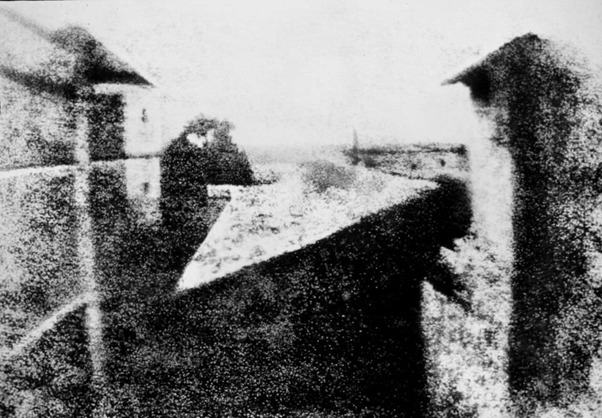

MULOO
Explore
Assalamualaikum and Great Day Everyone!
Muloo is a professional photography studio located in Bandar Seri Putra Bangi, Kajang that will provide photography services for students, graduates, families, weddings, and any type of event and program. Run by professional photographers Ilham Fitrah and Iman Hatija, his unique skill set and years of experience have enabled him to become a highly recommended independent photographer in the area. They have decided to open a retail location to expand its list of services and provide school portrait photos, senior graduation portraits, and business head photos. Muloo will be located in the center of the retail lane at Bandar Seri Putra Bangi, Kajang which has a high traffic exposure and can be seen by the public.
Today we will bring you all together in getting yo know and explore in more depth the world of photography. First, let's gain knowledge on what photography actually is.
Photography is the art of capturing light with a camera, usually through a digital sensor or film, to create an image. With the right camera equipment, you can also take pictures of wavelengths of light that are invisible to the human eye, including UV light, infrared, and radio.
The first permanent photograph was taken in 1826, by Joseph Nicéphore Niépce in France. It shows the roof of a building illuminated by the sun.

© Copyright All rights reserved.